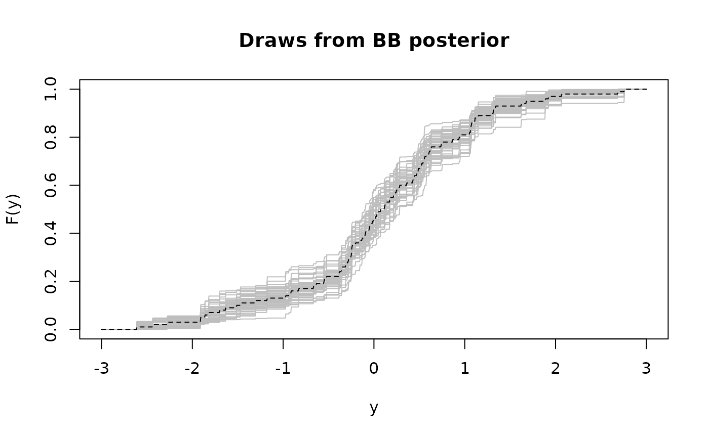

Compute one Monte Carlo draw from the Bayesian bootstrap (BB) posterior distribution of the cumulative distribution function (CDF).
Details
Assuming the data y are iid from an unknown distribution,
the Bayesian bootstrap (BB) is a nonparametric model for this distribution. The
BB is a limiting case of a Dirichlet process prior (without
any hyperparameters) that admits direct Monte Carlo (not MCMC) sampling.
This function computes one draw from the BB posterior
distribution for the CDF Fy.
Examples
# Simulate data:
y = rnorm(n = 100)
# One draw from the BB posterior:
Fy = bb(y)
class(Fy) # this is a function
#> [1] "function"
Fy(0) # some example use (for this one draw)
#> [1] 0.5173514
Fy(c(.5, 1.2))
#> [1] 0.6692355 0.8765828
# Plot several draws from the BB posterior distribution:
ys = seq(-3, 3, length.out=1000)
plot(ys, ys, type='n', ylim = c(0,1),
main = 'Draws from BB posterior', xlab = 'y', ylab = 'F(y)')
for(s in 1:50) lines(ys, bb(y)(ys), col='gray')
# Add ECDF for reference:
lines(ys, ecdf(y)(ys), lty=2)
